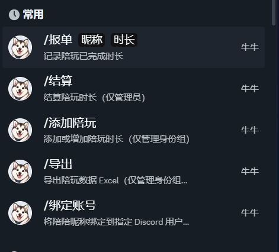

CASE 01 / FEATURED
Discord Community
Operations Bot
Built and deployed across three Discord servers serving nearly 1,000 members, this system manages play-session credits, usage reports, staff settlements, account bindings, welcome experiences, and live member events.
3Discord
servers
servers
~1KCommunity
members
members
22Slash
commands
commands
REAL DISCORD INTERFACE● IN USE

Work happens
in Discord.
An actual command menu from the deployed bot. Members report completed sessions; authorized staff add hours, settle balances, and export records.
ADD HOURS→REPORT→SETTLE
Original interface · not a mockup